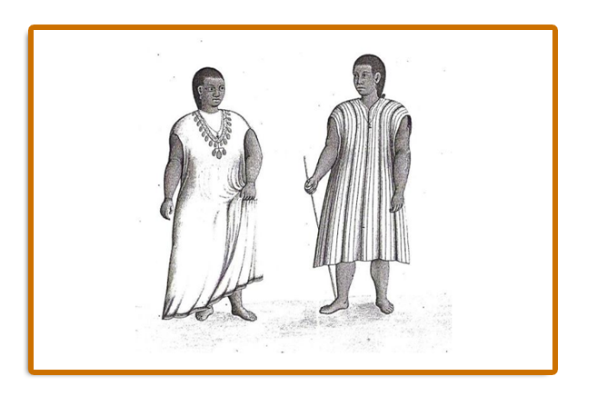

3. Chiquitano: Os Pequenos “Guardiões das Fronteiras”
A respeito da relação cotidiana dos Chiquitano com o trabalho, a centralidade da agricultura é apontada por Charupá (2002, p.301, tradução nossa) como uma das atividades desenvolvidas pela maioria dos grupos étnicos: “Os chiquitos ocupavam a metade de jornada de trabalho nas atividades agrícolas”. E, acrescenta que “Entre as nações não chiquitanas reduzidas (aldeadas/missões) que conheciam a agricultura tem que pontuar de modo especial as etnias de línguas arawaca e os puizocas”.[3]
|
3“Los chiquitos ocupaban la mitad de la jornada laboral en atividades agrícolas”. (CHARUPÁ, 2002, p.301)
“Entre las naciones no chiquitas reducidas que conocían la agricultura hay que señalar en modo especial las etnias de lengua arawaca e los puizocas” (CHARUPÁ, 2002, p.301)
Apesar da importância que davam ao trabalho com a agricultura, muitos Chiquitano eram sedentários ou semi-sedentários, alternando períodos de perambulação e de fixação (CHARUPÁ, 2002, p. 302). Apesar disso, tinham grande apego às suas terras, onde viviam e praticavam a caça, pesca, coleta de frutos silvestres e mel. Os sedentários mantinham o hábito da caça, pesca e a agricultura (cultivo do milho, mandioca, tabaco, diversos tipos de abóbora etc.) através do sistema de roça e queima para o plantio.
A historiadora Ione Aparecida Martins Castilho Pereira (2014) destacou, em sua tese, o sedentarismo dos povos Chiquitano baseado no relato do padre Julián Knogler
|
[...] é possível perceber a existência de outro tipo de vivenda indígena, de carácter mais provisório, que provavelmente estava relacionada à vida semi sedentária que os Chiquitos levavam em seus limitados territórios (PERREIRA, 2014, p. 62).
No aspecto central da cultura, Giovani José Silva (2009) destacou que a organização social da maioria dos povos indígenas Chiquitano compunham-se de sociedades igualitárias e que as decisões eram debatidas entre os membros adultos para chegar à um acordo comum a todos. Nesse intento, destacando que “[...] não produziam excedentes, não havendo, pois, grandes diferenças econômicas entre as famílias extensas que formavam os grupos” (SILVA, 2009, p. 115).
No entanto, quando tiveram contatos com os colonizadores os espanhóis, enfrentaram mudanças nas suas práticas econômicas através do incremento de excedentes e introdução da criação de gado bovino. Este alimento veio a tornar-se a referência alimentar e do abastecimento da Província de Chiquitos. Ademais, os povos indígenas Chiquitano foram incentivados na criação de galinhas e porcos, na extração de produtos nativos como a erva mate e a poaia.
A antropóloga Denise Maldi Meireles (1989), em sua obra Guardiões da Fronteira: rio Guaporé, século XVIII, destacou que os indígenas Chiquitano foram treinamentos pelos jesuítas para exercerem atividades variadas, a medida que fundaram as primeiras missões. Para a viabilidade dos aldeamentos, os religiosos incentivaram a produção de gado bovino, cavalar, de galinhas e ovos, sendo que buscou-se a garantia de produtos agrícolas (arroz, milho, legumes, bananas, cacau e cana-de-açúcar) para o comércio além de suprir o mercado interno. Segundo a autora “[...] os índios deveriam receber treinamento em carpintaria, marcenaria e outras habilidades e, finalmente, cada uma deveria ter uma área de cultivo de exportação para o Peru” (MEIRELES, 1989, p. 82).
A partir das informações de Meireles (1989), percebemos que os Chiquitano adquiriam hábitos alimentares e de produção dos alimentos dos colonizadores, mas sem abandonar suas tradições de uso do milho, mandioca, banana, abóboras, algodão arbustivo, caça, pesca, ervas medicinais, terapias curativas, artesanatos de madeira, argila, couros, cestaria, tecelagem, etc. Muitos pesquisadores consideram a adoção de tecnologias, de variedades agrícolas novas como cítricos, trigo, arroz, frutas, gado bovino, cavalar, porcos, galinhas e outras espécies alimentares como perda de identidade.
|
4. A Família como Base da Sociedade

Figura 05: Índios Castelhanos
|
Fonte:SILVA, Renata Bortoletto (2007, p. 65)
Em se tratando da estrutura familiar dos Chiquitano, Charupá (2002) destaca que a constituição familiar desses indígenas era monogâmica, com a predominância de famílias patriarcais onde o matrimonio entre os Chiquitano deveria seguir certos requisitos:
|
[...] como o feito que o pai de família somente cedia em casamento sua filha se o pretendente a esposo demostrava com alguma proeza (por exemplo, uma boa e abundante caça) sua capacidade de manter a futura esposa. (CHARUPÁ, 2002, p. 311, tradução nossa).[4]
4 “El matrimonio entre los chiquitos debía cumplir ciertos requisitos como el hecho que el padre de familia sólo cedia en casamiento a su hija si el pretendiente a esposo mostraba con alguna proeza (por ejemplo, una buena y abundante caza) su capacidad de mantener a la futura esposa” (CHARUPÁ, 2002, p.311).
Em suas pesquisas, Charupá (2002) destaca que a monogamia era uma das características da formação das famílias entre os Chiquitos, entretanto a poligamia era praticada pela figura do cacique que poderia ter mais de uma mulher. Características culturais muitas vezes justificadas em razão de suas atribuições perante a comunidade em que liderava, como por exemplo, organizar festas, fazer chicha (bebida tradicional) para servir em momentos especiais na comunidade.
Vários dos povos indígenas Chiquitano eram semissedentários, como indica a forma de construção de suas casas, descritas por espanhóis nos primeiros contatos com esses indígenas, sendo que as moradias eram consideradas casas simples e com formato de forno e feito com palhas (CHARUPÁ, 2002, p. 318).
A antropóloga Alda Lúcia Monteiro Souza (2009) em sua dissertação A história dos Chiquitanos: (re)configurações sociais e territoriais, reitera que:
|
As numerosas aldeias dos Chiquitos estavam situadas em terrenos elevados para evitar inundações. A comunicação entre as aldeias dispersas era garantida por várias estradas. As aldeias formavam uma espécie de “unidade social básica”, ligadas umas às outras pela solidariedade de uma língua comum e laços de parentesco (Souza, 2009, p. 47).
Com relação à descrição do formato das aldeias indicadas acima, observa-se que as organizações destas, também foram retratadas por representantes religiosos que tiveram contato com os Chiquitano. Conforme representação de Hans Roth (1993), a partir do desenho elaborado pelo Padre Burgés, em 1703 que, encontra-se exposto no Museu de História de Santa Cruz/Bolívia.
|
Figura 01 : Descrição de casa Chiquitano por Jesuítas na Missão de Chiquitos (1703)
|
Fonte:Aloir Pacini (2012, p. 421).
As casas eram simples, o material mais utilizado para a construção era a palha, mas havia uma construção que os próprios jesuítas mantiveram ao serem reduzidos nas Missões, a chamada casa comum. Em sua tese Renata Bortoletto Silva (2007) explica que: “[...] Nas aldeias existiam também as chamadas casas dos homens, um espaço cerimonial, onde ficavam os garotos na puberdade. Eram construções abertas, e lá recebiam os visitantes e faziam as festas” (SILVA, 2007, p. 44).
E, ainda a propósito do adolescente, salienta-se ainda que aos quatorze ou quinze anos permaneciam neste espaço cerimonial por um tempo e, logo poderiam constituir sua própria família, desde que provasse que poderia sustentar sua futura companheira através da caça. Além de ganhar prestígio na comunidade, uma vez que, “[...] caçadores hábeis eram tidos com muito orgulho pelo grupo” (SILVA, 2007, p. 45). Sendo esta casa um espaço cerimonial ali também recebiam hóspedes, realizavam muitas festas. A principal bebida servida aos convidados era a chicha feita do milho e distribuída nas ocasiões especiais e nos festejos.
Chicha uma bebida tradicional dos Chiquitano e continua sendo apreciada pelos
Chiquitano, conforme aponta Pacini (2012):
|
|
“Pote chiquitano (tinaja) no museu de Santa Ana. Nas casas existem vários potes de cerca de um metro de altura que utilizam para recolher a agua da chuva. Outros potes são usados para preparar e fermentar a chicha e antes também eram usadas para fazer açúcar. (PACINI, 2012, p.543 e 550)
Phasellus bibendum aliquet erat, ut ornare purus malesuada et. |
5. A Importância dos Xamãs na Crenças dos Povos Chiquitano
As crenças dos povos indígenas de Chiquito segundo os missionários: “[...] coinciden en señalar la carência de una divindade suprema entre los chiquitos”
(CHARUPÁ, 2002, p. 328).[5]Isto não significa que não tinham suas crenças. Os relatórios dos jesuítas também dão algumas pistas que existiam crenças como Meireles (1989):
|
[...] os grupos chiquitanos propriamente estavam divididos em numerosas aldeias com chefias independentes; ostentavam os "templos" ou "casas de bebida" e contavam com a presença de poderosos xamãs que "oficializavam" os rituais de consumo coletivo de chicha. Por outro lado, a religião era absolutamente distinta. Não havia o culto ao jaguar, mas cerimônias celebradas em honra a "divindades" distintas, conduzidas pelos xamãs que eram os intermediários entre a humanidade e o rico panteão. (MEIRELES, 1989, p. 60).
Os Xamãs faziam um papel de interlocutores entre os humanos e os seres sobrenaturais que agregavam funções de chefia e feitiçaria. E podemos destacar as divindades cósmicas: o sol, a lua, as estrelas e animais. Sendo que, os povos indígenas com o dialeto Manasí, o sol era venerado como “[...] um homem luminoso [...] no caso da lua, os chiquitano a honravam com o título de “Mae”, mas sem um culto especial senão durante os eclipses.” (CHARUPÁ, 2002, p. 333, tradução nossa).[6]
Segundo Charupá (2002), em geral não havia uma divindade suprema entre os chiquitos. Assinala também ao interpretar o relato do padre Francisco Burgés da Companhia de Jesus na Província de Paraguay, evidencia que esse jesuíta considerava os Chiquitos como um povo mais bárbaro em relação às demais nações, visto que não reconheciam e nem respeitavam nenhuma divindade.
Por outro lado, Verone Cristina Silva (2015) na tese Carnaval: Alegria dos Imortais - Rituais, pessoa e Cosmologia entre Chiquitano no Brasil, afirma que uma das festas mais tradicionais deste povo é o Carnaval, celebração que representa o começo do mundo:
|
De acordo com a filosofia Chiquitano, no fim de cada ciclo anual, a terra estaria suja, prestes a adoecer, assim como os seres que nela habitam; diante deste entendimento, é necessário, portanto, que juntos todos se renovem, permitindo o reinício da vida (SILVA, 2015, p.15).
Salienta-se que é uma celebração religiosa dos Chiquitano, contradizendo o relato de Francisco Burgés, quando afirmou que era um povo bárbaro, e que segundo Cristina Silva (2015) atualmente a celebração do carnaval acontece “[...] na mesma data do carnaval ocidental, contudo há um calendário ritual próprio que marca o fim e o início
|
5 Tradução: “[...] coincidem em pontuar a falta de uma divindade suprema entre os chiquitano” (CHARUPÁ, 2002, p. 328).
6 “[...] un hombre luminoso [...] en el caso de la luna, los chiquitos la honraban con el título de “Madre”, pero sin un culto especial sino durante los eclipses” (CHARUPÁ, 2002, p. 333) (CHARUPÁ, 2002, p. 333).
De um novo tempo, pois consideram que, depois do carnaval, vem o Ano Novo” (SILVA, 2015, p. 15).
Portanto, o carnaval tem todo um ritual, com elementos culturais reúnem toda a comunidade para celebrarem e ao mesmo tempo consumirem uma das bebidas mais tradicionais, a chicha (bebida fermentada do milho), além de dançarem ao som do curussé, dança de origem chiquitana. Pacini (2012, p. 528) descreve a dança através dos relatos descritos pelo Padre Burgés em 1703 que registrou uma festa, em que fazem uma roda em torno dos músicos com “flautas largas”, além de alguns instrumentos que foram incorporados a partir do contato com os jesuítas como o violino. Contudo, as pesquisas indicam que já tinham a tradição de dançar e tocar instrumentos antes mesmo dos jesuítas chegarem na região que ficou conhecida como a província de Chiquitos.
|
Por Luciana Martinez de Oliveira Costa.
COSTA, Luciana Martinez de Oliveira. A Presença de Povos Indígenas Chiquitano, Bororo, Guató e Guaná em Vila Maria do Paraguai e São Luiz de Cáceres (1778-1874): Uma Abordagem de Temática Indígena Na Educação Básica. Cáceres, 2020. Dissertação (Mestrado Profissional ProfHistória), Unemat.
Link da dissertação completa
6. REFERÊNCIAS BIBLIOGRÁFICAS
ARRUDA, Ariane Aparecida Carvalho. Condicionantes étnicos na criação das missões de chiquitos: alianças e conflitos na chiquitania e no pantanal (1609-1691). Porto Alegre, 2011. Dissertação (Mestrado), PUCRS.
CHARUPÁ, Roberto Tomichá, R. La Primera Evangelización en Las reducciones de Chiquitos, Bolivia (1691-1767): protagonistas y metodología misional. Cochabamba: Verbo Divino, 2002.
FUNAI. Terras indígenas. Disponível em Funai.gov.br
> Acesso em 09 de Mar. 2020.
PACINI, Aloir. Identidade étnica e território Chiquitano na Fronteira (Brasil-Bolívia). Porto Alegre, 2012. Tese (Doutorado em Antropologia Social) IFCH/UFGS.
PEREIRA, Ione Aparecida Martins Castilho. Missão jesuítica colonial na Amazônia Meridional: Santa Rosa de Mojo uma missão num espaço de fronteira (1743-1769) – Porto Alegre, 2008. Dissertação (Mestrado), PUCRS.
SILVA, Renata Bortoletto. Os Chiquitano de Mato Grosso: um estudo das classificações sociais em um grupo indígena de fronteira Brasil – Bolívia. São Paulo, SP. 2007. Tese (Doutorado em Antropologia Social), Faculdade de Filosofia, Letras e Ciências Humanas (FFLCH) – Universidade de São Paulo – USP.
SILVA, Verone Cristina. Carnaval: Alegria dos Imortais – Rituais, pessoa e Cosmologia entre Chiquitano no Brasil. São Paulo, SP. 2015. Tese (Doutorado em Antropologia Social), USP.
SOUZA, Alda Lúcia Monteiro de em sua dissertação - A história dos Chiquitanos: (re)configurações sociais e territoriais. Brasília, DF. 2009. Dissertação (Mestrado em Antropologia Social) UNB.
[1]“[...] la región chiquitana fue poblada por numerosos grupos indígenas siendo muy difícil sino imposible de completa identificación de cada una de las etnias que la habitaban” (CHARUPÁ, 2002, p. 219).
[2]“En otras palabras, llamamos “chiquitanos” a todos los nativos reducidos que, prescindiendo de la propia nación o cultura de origen y después de un período de aculturación, reducional, incorporaran la lengua chiquita como medio de comunicación habitual. Por el contrario, como ya se ha dicho, llamamos “chiquitos” a aquellas etnias que ya antes de su conversión a la fe cristiana hablaban la lengua chiquita (CHARUPÁ, 2002, p. 231).
[3] “Los chiquitos ocupaban la mitad de la jornada laboral en atividades agrícolas”. (CHARUPÁ, 2002, p.301)
“Entre las naciones no chiquitas reducidas que conocían la agricultura hay que señalar en modo especial las etnias de lengua arawaca e los puizocas” (CHARUPÁ, 2002, p.301)
[4] “El matrimonio entre los chiquitos debía cumplir ciertos requisitos como el hecho que el padre de familia sólo cedia en casamiento a su hija si el pretendiente a esposo mostraba con alguna proeza (por ejemplo, una buena y abundante caza) su capacidad de mantener a la futura esposa” (CHARUPÁ, 2002, p.311).
[5]Tradução: “[...] coincidem em pontuar a falta de uma divindade suprema entre os chiquitano” (CHARUPÁ, 2002, p. 328).
[6]“[...] un hombre luminoso [...] en el caso de la luna, los chiquitos la honraban con el título de “Madre”, pero sin un culto especial sino durante los eclipses” (CHARUPÁ, 2002, p. 333) (CHARUPÁ, 2002, p. 333).

| | | |